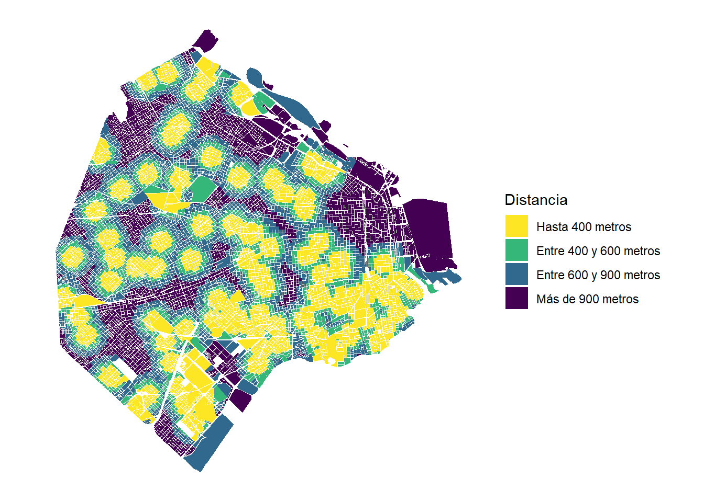
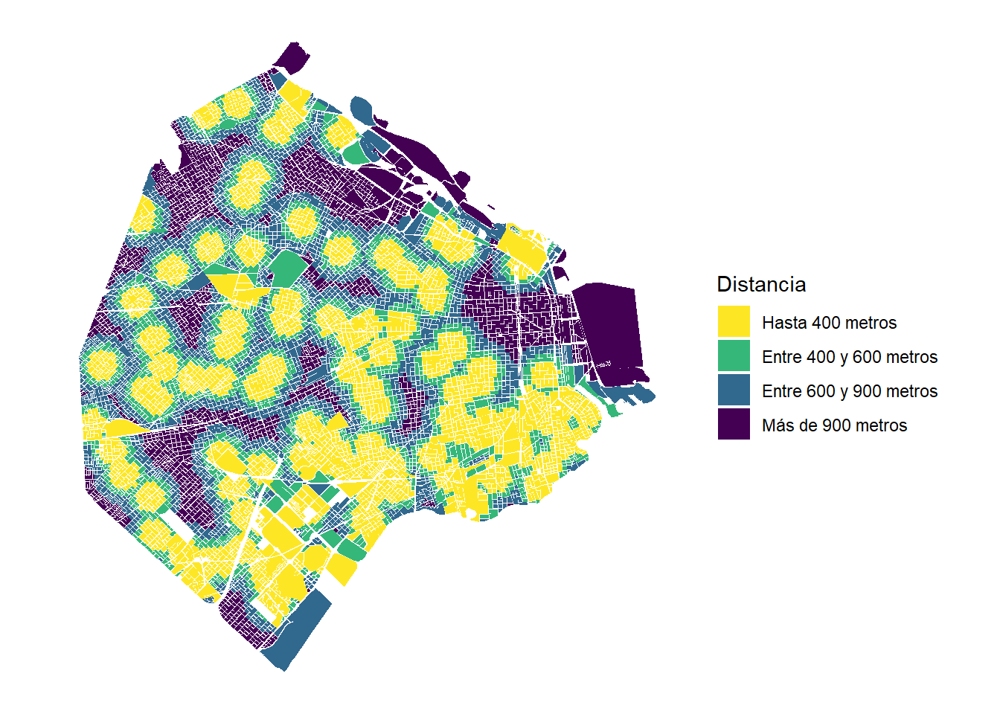
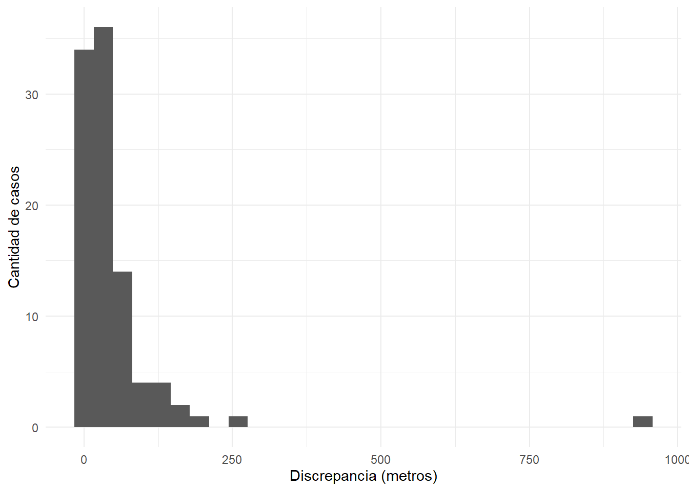

4 Geocoding: de la representación humana al sistema de coordenadas
En capítulos anteriores ya descubrimos la particularidad de la representación de los datos espaciales: los ubicamos en base a un modelo de la tierra en lo qu se conoce como Coordinate Reference System (CRS). Esta forma de representación es muy distinta a la que tenemos en nuestras cabezas cuando nos dicen que tenemos que ir a cursar a Figueroa Alcorta 7350. En diversas circunstancias vamos a necesitar convertir esta direcciones a puntos espaciales para poder agregar información relevante para nuestros análisis y encontrar nuevos patrones en nuestros datos. Veamos cómo podemos hacerlo usando servicios del Estado de Argentina y también de Google.
4.1 ¿Qué es la geocodificación o geocoding?
Geocoding no es otra cosa que la transformación de una ubicación en el formato que manejamos a diario hacia una coordenada en un sistema de coordenadas de referencia (CRS, en inglés). Esta simple operación es sumamente útil para muchos de nuestros objetivos. Imaginemos que queremos tener alguna medida de la cobertura de atención para la salud en la Ciudad de Buenos Aires. Tenemos la dirección de distintos hospitales y centros de salud, pero no conocemos cómo se distribuyen en el espacio. Carguemos primero estos datos
Y veamos un poco las variables que tenemos
## Rows: 115
## Columns: 4
## $ Establecimiento <chr> "Hospital General de Agudos Dr. T. Alvarez", "Hospital General de Agudos Dr. C. Arg...
## $ Dirección <chr> "Doctor Juan Felipe Aranguren 2701", "Pi y Margal 750", "Diaz Velez 5044", "Cerviño...
## $ Barrio <chr> "Flores", "La Boca", "Caballito", "Palermo", "Parque Patricios", "Flores", "Coghlan...
## $ Tipo <chr> "Hospital General de Agudos", "Hospital General de Agudos", "Hospital General de Ag...Geocodificemos con la ayuda del paquete wrapar
# Si no lo tenés insalado
# require(devtools)
# install_github("martinmontane/wrapar")
library(wrapar)
# Agregamos una variable de ID y una columna que indique la provincia
salud <- salud %>%
mutate(id=row_number(),
provincia="Ciudad de Buenos Aires")
saludGeoreferenciado <- geocodeDirecciones(datos = salud,
col_id = "id",
col_direccion = "Dirección",
col_provincia = "provincia")
# Seleccionamos las que tuvimos algún match
saludGeoreferenciado <- saludGeoreferenciado %>%
filter(nMatchAPI %in% 1)
# Le agregamos información que estaba en el anterior data.frame
saludGeoreferenciado <- left_join(saludGeoreferenciado,
salud,
by=c("id"))
library(sf)
# Convertimos a objeto sf
saludSf <- st_as_sf(saludGeoreferenciado,
coords=c("ubicacion.lon","ubicacion.lat"),
crs=4326)Con la ayuda de leaflet hagamos un simple mapa interactivo
library(leaflet)
leaflet(saludSf) %>%
addTiles() %>%
addMarkers(label = ~ Establecimiento,
popup = ~ Tipo)Nada mal, no? No se preocupen si no entienden lo que hicimos, la única idea de esta introducción es mostrarle lo que van a ser capaces de hacer, nada más ni nada menos. Vamos a ir explicando cómo funciona todo esto.
4.2 API: Interfaz de programación de aplicaciones
Sin saberlo, en el ejemplo anterior usamos la API de georreferenciación de Argentina a través de la función geocodeDirecciones() del paquete wrapar ¿Qué es una API? Una API es un conjunto de reglas preestablecidas que nos permiten comunicarnos con servicios que están escritos en diferente lenguaje y con un conjunto de procedimientos específicos. Imaginenlo como que nuestro código de R es español, y la API de geolocalización del Gobierno está en francés, la API podría ser un idioma intermedio, como el inglés, para comunicarnos. Si quieren aprender como comunicarse sin hacerlo por intermedio de wrapar [pueden aprenderlo leyendo los documentos del desarrollo del gobierno]. La idea de wrapar es no tener que aprender otro idioma y hacer todo desde R.
Las APIs exceden a este desarrollo particular del gobierno y casi cualquier servicio de cualquier empresa tiene una API para que distintos usuarios puedan hacer consultas sin tener que conocer específicamente cómo es que el servicio trabaja por detrás, es muy útil y eficiente. En este capítulo vamos a usar dos APIs: la del Gobierno, que ya fue presentada, y la de Google. Veamos las funcionalidades y ventajas y desventajas que cada una tiene.
4.3 Servicio de Normalización de Datos Geográficos de Argentina
Podemos comunicarnos con el servicio de normalización de datos geográficos de Argentina mediante la función geocodeDirecciones() del paquete wrapar. La función necesita que le pasemos algunos parámetros para poder hacer bien su trabajo.
- datos: En este parámtro simplemente hay que poner el data.frame que tiene la información que querés georeferencair
- col_id: es el nombre de la columna que tiene los códigos identificadores únicos de cada uno de los puntos. La función lo hace obligatorio porque va a ser la columna que después va a ser útil para incorporar el resultado de la geocodificación.
- col_direccion: es el nombre de la columna donde se encuentra la dirección, sin incluid información sobre la localidad, provincia, pais, etc
- col_provincia: es el nombre de la columna que tiene el nombre de la provincia
Con estos cuatro parámetros, cómo hicimos anteriormente, la función pasa las dirección a la API y la API nos devuelve un data.frame con las siguientes variables:
- id: la columna que identifica a cada uno de los puntos
- nMatchAPI: nos dice cuántos resultados encontró la API para esa dirección (puede ser más de uno)
- codigoAPI: Un código que dice “Exito” cuando se pudo comunicar con la API o “Error” cuando hubo algún problema en la comunicación
- calle.nombre, departamento.nombre, localidad_censal.nombre, y nomenclatura: variables donde tenemos más información sobre la dirección que encontró la API
- ubicacion.lat y ubicacion.lon las coordenadas de latitud y longitud en el sistema de coordenads EPSG 4326
Ahora que ya sabemos cómo funciona, relean el código que estaba en la parte de arriba ¿Cuántos puntos pudo geolocalizar? 97. En principio, no sabemos si están bien o mal (la API puede haber devuelto simplemente un punto que no correspondía), pero podemos estar seguros que para 18 de nuestros 115 casos no encontró ninguna respuesta. Esto suele pasar cuando la API no es capaz de mapear la dirección que le pasamos con otra que si reconozca. Usando otras herramientas vistas anteriormente, hagamos un mapa de distancia mínima entre cada una de las manzanas de la Ciudad de Buenos Aires y los puntos de los establecimientos de salud.
Lo primero que tenemos que hacer para medir las distancias es tener proyectados a los CRS para que la distancia midan metros y no diferencias entre coordenadas latitud y longitud.
manzanas <- read_sf("http://cdn.buenosaires.gob.ar/datosabiertos/datasets/manzanas/manzanas.geojson")
# El objeto manzanas está representado en el CRS que corresponde al ESPG 4326
st_crs(manzanas)## Coordinate Reference System:
## User input: WGS 84
## wkt:
## GEOGCRS["WGS 84",
## DATUM["World Geodetic System 1984",
## ELLIPSOID["WGS 84",6378137,298.257223563,
## LENGTHUNIT["metre",1]]],
## PRIMEM["Greenwich",0,
## ANGLEUNIT["degree",0.0174532925199433]],
## CS[ellipsoidal,2],
## AXIS["geodetic latitude (Lat)",north,
## ORDER[1],
## ANGLEUNIT["degree",0.0174532925199433]],
## AXIS["geodetic longitude (Lon)",east,
## ORDER[2],
## ANGLEUNIT["degree",0.0174532925199433]],
## ID["EPSG",4326]]# El objeto de saludSf no tiene información sobre el CRS de las coordenadas, pero sabemos que es 4326
st_crs(saludSf) <- 4326
# Convertimos a los dos a la proyección que usa el GCBA
manzanas <- st_transform(manzanas,
crs="+proj=tmerc +lat_0=-34.629269 +lon_0=-58.4633 +k=0.9999980000000001 +x_0=100000 +y_0=100000 +ellps=intl +units=m +no_defs ")
saludSf <- st_transform(saludSf,
crs="+proj=tmerc +lat_0=-34.629269 +lon_0=-58.4633 +k=0.9999980000000001 +x_0=100000 +y_0=100000 +ellps=intl +units=m +no_defs ")Fìjense que usamos un texto largo en lugar de un código para especificar el CRS de la Ciudad de Buenos Aires. Esto suele pasar cuando una proyección no se encuentra correctamente indexada en el catálogo de EPSG. Lo único que hace EPSG es ponerle un número a cada conjunto de parámetros que determinan un CRS (como los que vemos en el texto que usamos dentro de st_transform). Para buscar los CRS cuando no saben cual usar, les recomiendo https://spatialreference.org/
Ya podemos calcular las distancias.
# Tomamos las distancias
distanciaManzanas <-st_distance(x = manzanas, y=saludSf)
# Nos quedamos con el valor mínimo de distancia entre cada punto y cada manzana
distanciaManzanas <- apply(distanciaManzanas,1,min)
# Agregamos estos datos al dataset de manzanas
manzanas <- manzanas %>%
mutate(distMinima=distanciaManzanas)Quizás la parte más rara o con la que están menos familiares es la que dice apply(distanciaManzanas,1,min). La función apply() sirve para iterar, es decir, para realizar el mismo procedimiento para todas las filas o columnas de una matriz. Cuando ponemos 1 luego de pasar a la matriz, va a hacer todo fila por fila, si dice 2 lo hará columna por columna. distanciaManzanas tenía la distancia en metros de cada uno de los centroides de las manzanas contra cada uno de los puntos, por lo cual lo que hace ahí es ir fila por fila y tomar el valor mìnimo (fijense que le pedimos que aplique la función min en el ùltimo argumento). Con esto, ya podemos hacer nuestro gráfico de la accesibilidad de las manzanas a establecimientos de salud:
manzanas <- manzanas %>%
mutate(distCat=cut(distMinima,
breaks = c(0,400,600,900,max(manzanas$distMinima)),
labels = c("Hasta 400 metros", "Entre 400 y 600 metros", "Entre 600 y 900 metros","Más de 900 metros"),
include.lowest = TRUE))
ggplot(manzanas) +
geom_sf(aes(fill=distCat),color=NA) +
scale_fill_viridis_d(direction = -1,name="Distancia") +
theme_minimal() +
coord_sf(datum = NA)
Se observa una importante parte de la Ciudad de Buenos Aires cubierta por al menos un hospital/centro de salud a menos de 400m, con algunas manchas azules en algunas zonas, que puede o no ser explicada por los 18 puntos que nos faltaron georeferenciar. Repliquemos lo mismo, pero ahora usando el servicio de google.
4.4 Google geocode API
Google ofrece una amplia gama de servicios para lo que ellos llaman “desarrolladors”, que excede largamente el uso de la API de Google Maps. Sin embargo, la forma para acceder a todos estos servicios tiene como origen una misma cuenta. Desde esta cuenta se pueden ir agregando diversos modulos con funcionalidades distintas. Veamos como registrar la cuenta y habilitar los servicios que necesitamos.
Vayan a https://cloud.google.com/ e ingresen con una cuenta de Google (no es necesario que usen una cuenta personal, pueden crear una nueva en caso de ser necesario). Una vez que esten logueados, van a ver un botón en la esquina derecha que dicen “Consola”. Ingresen ahí y desde el menú de navegación en la parte izquierda de la pantalla vayan a APIs y servicios. Ahí van a ver que les va a pedir que creen un proyecto: para usar una API es necesario asociar a un “proyecto” en la plataforma de Google, al que le pueden poner el nombre que ustedes quieran.
Lo que nosotros necesitamos ahora es activar las APIs que queremos usar. Google ofrece una multitud de APIs, por lo que más simple es buscarlas en la barra que nos ofrece. Vamos a activar dos APIs: Geocoding API y Distance Matrix API. Primero habilitemos Geocoding API y veamos qué pasa. Si todo funcionó bien, deberían estar en la página de su proyecto nuevo, pero ahora en el submenú de API deberían ver que dentro de API habilitadas tienen una que dice “Geocoding API” ¡Muy bien! Abajo de ese título van a ver que les recomienda otras API en API adicionales. Elijan Distance Matrix API. Habilítenla y listo, ya tenemos las dos APIs con las que vamos a trabajar en el curso.
Ahora solo nos queda crear una especie de “contraseña” con la que vamos a vincular nuestra cuenta de Google desde R. Esto es necesario porque las API de Google son servicios pagos. Dan USD 300 de crédito inicial, pero luego hay que ingresar una tarjeta de crédito para continuar usando el servicio, aunque dan USD 200 de crédito todos los meses, el equivalente aproximadamente a 40.000 búsquedas de geocoding. Esta “contraseña” se llama credencial o “key”. Pueden activarla desde el menú de la izquierda en “API y servicios” y luego “credenciales”. Allí pueden crear una credencial, que es básicamente una clave de muchos caracteres que será necesaria para lo que sigue.
Importante: Para que efectivamente funcione lo que sigue en esta clase tienen que asociar una tarjeta de crédito a la cuenta de Google. Si bien “regala”" USD 300 en el primer uso, y USD 200 todos los meses, hay que tener cuidado una vez que la tarjeta ha sido ingresada. Si quieren probar el uso de esta herramienta pongan quotas desde su cuenta de Google.
Hechas las presentaciones formales, veamos cómo podemos hacer lo mismo con la funcion geocodeGoogle(). Esta función requiere parámetros similares a la de geocodeDirecciones(), veamos:
- datos: En este parámtro simplemente hay que poner el data.frame que tiene la información que querés georeferencair
- col_id: es el nombre de la columna que tiene los códigos identificadores únicos de cada uno de los puntos. La función lo hace obligatorio porque va a ser la columna que después va a ser útil para incorporar el resultado de la geocodificación.
- cols_query: En esta columna hay que pasar un vector character con las variables que queremos que se incluyan en la consulta
- col_key: nombre de la columna que tiene los datos de la “key” o “credencial” de google
- col_region: Este parámetro es opcional y se puede delimitar la búsqueda de google a un área. Por default, region no tiene ningún valor por lo cual busca en todo el mundo.
Veamosla en función. Este código, así como está, no debería funcionar porque la key es incorrecta. Deben colocar una propia para que funcione
# Mismas operaciones que anteriormente, pero esta vez agregamos una columna con la key y de region AR
salud <- read_csv("data/HospitalesYCentrosSalud.csv")
salud <- salud %>%
mutate(id=row_number(),
provincia="CABA",
key="aknfadgnadoigdagoida",
region="AR")Ahora ya podemos hacer el geocoding con google !
saludGoogle <- geocodeGoogle(datos = salud,
col_id = "id",
cols_query =c("Dirección","provincia","Barrio"),
col_key = "key",
col_region = "region")Un mapa rápido en leaflet para ver qué encontró:
saludGoogle <- st_as_sf(x = saludGoogle,
coords=c("results.geometry.location.lng","results.geometry.location.lat"),
crs=4326)
leaflet(saludGoogle) %>%
addTiles() %>%
addMarkers()Parece bastante bien, veamos cuáles son las varaibles que nos devolvió
## Rows: 118
## Columns: 19
## $ results.address_components <list> [<data.frame[7 x 3]>, <data.frame[6 x 3]>, <data.frame[8 x...
## $ results.formatted_address <chr> "Dr. Juan Felipe Aranguren 2701, C1406 FWY, Buenos Aires, A...
## $ results.geometry.bounds.northeast.lat <dbl> -34.62389, -34.62763, NA, -34.58102, -34.64273, NA, NA, NA,...
## $ results.geometry.bounds.northeast.lng <dbl> -58.46902, -58.36497, NA, -58.40647, -58.40930, NA, NA, NA,...
## $ results.geometry.bounds.southwest.lat <dbl> -34.62439, -34.62853, NA, -34.58183, -34.64408, NA, NA, NA,...
## $ results.geometry.bounds.southwest.lng <dbl> -58.46994, -58.36607, NA, -58.40746, -58.41131, NA, NA, NA,...
## $ results.geometry.location_type <chr> "ROOFTOP", "ROOFTOP", "ROOFTOP", "ROOFTOP", "GEOMETRIC_CENT...
## $ results.geometry.viewport.northeast.lat <dbl> -34.62279, -34.62673, -34.60807, -34.58008, -34.64205, -34....
## $ results.geometry.viewport.northeast.lng <dbl> -58.46813, -58.36417, -58.43656, -58.40561, -58.40896, -58....
## $ results.geometry.viewport.southwest.lat <dbl> -34.62549, -34.62943, -34.61077, -34.58277, -34.64475, -34....
## $ results.geometry.viewport.southwest.lng <dbl> -58.47083, -58.36687, -58.43926, -58.40831, -58.41166, -58....
## $ results.place_id <chr> "ChIJr_Z5l4zJvJURY2wsvn1SkM8", "ChIJd9naU8k0o5URZ2n7ZEl68fA...
## $ results.types <list> ["premise", "premise", "street_address", "premise", <"esta...
## $ status <chr> "OK", "OK", "OK", "OK", "OK", "OK", "OK", "OK", "OK", "OK",...
## $ id <int> 1, 2, 3, 4, 5, 6, 7, 8, 9, 10, 11, 12, 13, 14, 15, 16, 17, ...
## $ results.plus_code.compound_code <chr> NA, NA, "9HR6+6R Buenos Aires, Argentina", NA, NA, "9G4W+G8...
## $ results.plus_code.global_code <chr> NA, NA, "48Q39HR6+6R", NA, NA, "48Q39G4W+G8", "48Q3CGPH+3G"...
## $ results.partial_match <lgl> NA, NA, NA, NA, NA, NA, NA, NA, NA, NA, NA, NA, NA, NA, NA,...
## $ geometry <POINT [°]> POINT (-58.46949 -34.62417), POINT (-58.3655 -34.6280...Wow, muchas variables. La primera columna tiene, adentro, un data.frame con información que está en el resto de las columnas, así que vamos a ignorarla. Luego tenemos la formatted_address, que nos permite ver cuál es la calle que efectivamente nos devolvió Google. Luego tenemos cuatro coordenadas bounds, que sirven solo cuando nos devolvió un polígono en lugar de un punto (no le vamos a prestar atención, vamos a trabajar con los puntos que haya devuelto). Luego en location.lat y location.lng tenemos específicamente la latitud y longitud de nuestra dirección. Existen otras columnas, pero con estas y id y partial_match ya podemos seguir.
Si están atentos/as a lo que estamos haciendo, van a ver que saludGoogle devolvió 118 resultados cuando mandamos 115 ! Qué fue lo que pasó? Siempre que pasa esto es porque google no encontró un resultado “perfecto” para nuestra consulta y nos devolvió más de uno. Cómo nos damos cuenta? De distintas maneras, pero partial_match, status y mirar a los duplicados nos va a servir mucho. Para empezar, hagamos esto último: veamos cuáles son los que están duplicados
# Buscamos los duplicados
idsDuplicados <- saludGoogle %>%
group_by(id) %>%
summarise(conteo=n()) %>%
filter(conteo>1) %>%
pull(id)
# Los vemos con View()
View(saludGoogle[saludGoogle$id %in% idsDuplicados,])En “results.types” van a ver que los ids 78 y 79 son rutas en lugar de puntos, por lo cual no nos sirve: no pudo encontrar un punto que se parezca a la dirección que le pasamos. Vamos a tener que filtrar esos casos. Finalmente, el id 62 nos devuelve dos casos para la misma dirección, uno pareciera ser el hospital y otro la policía (en la misma dirección): eso es algo que no nos interesa. Entonces lo que vamos a hacer es sacar a 78 y 79 y quedarnos solo con uno de los dos del 62. Lo hacemos así:
# Filtramos los ids y cualquier caso duplicado en id
saludGoogle <- saludGoogle %>%
filter(!id %in% c(78,79)) %>%
filter(!duplicated(id))La función duplicated nos elimina a todas las filas que aparecen por segunda vez en el data.frame con el mismo id. En este caso, elimina la segunda vez que aparece el número 62, por lo que funcionó bien. Ahora tenemos 113 puntos georeferenciados, solo perdimos el 78 y el 79. Hagamos el mismo gráfico que hicimos anteriormente:
# El objeto de saludGoogle no tiene información sobre el CRS de las coordenadas, pero sabemos que es 4326
st_crs(saludGoogle) <- 4326
# Convertimos a los dos a la proyección que usa el GCBA
manzanas <- st_transform(manzanas,
crs="+proj=tmerc +lat_0=-34.629269 +lon_0=-58.4633 +k=0.9999980000000001 +x_0=100000 +y_0=100000 +ellps=intl +units=m +no_defs ")
saludGoogle <- st_transform(saludGoogle,
crs="+proj=tmerc +lat_0=-34.629269 +lon_0=-58.4633 +k=0.9999980000000001 +x_0=100000 +y_0=100000 +ellps=intl +units=m +no_defs ")
# Tomamos las distancias
distanciaManzanas <- st_distance(x = manzanas, y=saludGoogle)
# Nos quedamos con el valor mínimo de distancia entre cada punto y cada manzana
distanciaManzanas <- apply(distanciaManzanas,1,min)
# Agregamos estos datos al dataset de manzanas
manzanas <- manzanas %>%
mutate(distMinima=distanciaManzanas)
manzanas <- manzanas %>%
mutate(distCat=cut(distMinima,
breaks = c(0,400,600,900,max(manzanas$distMinima)),
labels = c("Hasta 400 metros", "Entre 400 y 600 metros", "Entre 600 y 900 metros","Más de 900 metros"),
include.lowest = TRUE))
ggplot(manzanas) +
geom_sf(aes(fill=distCat),color=NA) +
scale_fill_viridis_d(direction = -1,name="Distancia") +
theme_minimal() +
coord_sf(datum = NA)
Bastante parecida a la geolocalización de la API del gobierno, a simple vista, pero con una mayor cobertura. Veamos, ahora, en cuanto difieren los cálculos de uno y otro dataset
4.5 Diferencias entre las dos APIs
Podemos ver las diferencias de muchas maneras, pero poniendo los puntos con un color de cada uno no sería lo mejor, ya que no podemos ver entre cual par de puntos fue la diferencia. Hagamos algo más simple: la distancia entre cada uno de los puntos.
distancias <- st_distance(x = saludGoogle[saludGoogle$id %in% saludSf$id,],
saludSf[saludSf$id %in% saludGoogle$id,],
by_element = TRUE)
distancias <- data.frame(distancia=as.numeric(distancias))
ggplot(distancias) +
geom_histogram(aes(x=distancia)) +
theme_minimal() +
labs(x="Discrepancia (metros)",y="Cantidad de casos")## `stat_bin()` using `bins = 30`. Pick better value with `binwidth`.
La diferencia es baja en casi todos los casos, menos uno que está en aproximadamente 900 metros. Si aceptamos una tolerancia de 200 metros de diferencia, la coincidencia es casi total, nada mal. Google tiene una ventaja, igual: devolvió todos menos dos puntos.
4.6 Una tercera alternativa: geocode_OSM()
En general, la tarea de geocodificación requiere cierta prueba y error. No todos los servicios de geocodificación saben interpretar de la misma manera a las direcciones, y muchas veces las asignan a distintas coordenadas (este problema puede ser especialmente importante al trabajar con Google Maps, que siempre intenta devolver algún resultado). Open Street Map (OSM) nos brinda otra alternativa para poder hacer geocoding, y esta vez de manera gratuita y sin restricciones geográficas (es decir, funciona para distintos países).
Para usar este servicio, deben tener instalado tmaptools y su uso es realmente simple. Solo debemos generar una variable que tenga la dirección que vamos a consultar y luego usar geocode_OSM()
library(tmaptools)
salud <- salud %>%
mutate(consultaOSM=paste(Dirección,", Ciudad de Buenos Aires, Argentina",sep=""))
saludOSM <- geocode_OSM(salud %>% pull(consultaOSM),projection = 4326,return.first.only = TRUE,as.sf = TRUE)A diferencia de lo que hicimos con wrapar, en este caso ya nos devolvió un objeto sf, podemos usar leaflet para hacer un control de que, al menos, nuestros puntos están en la Ciudad de Buenos Aires
Puede fallar… algunos están afuera de la Ciudad de Buenos Aires ¿Tienen idea de como detectarlos ? Les doy una pista: pueden bajarse un mapa de argentina por provincia (por ejemplo de acá)[https://www.indec.gob.ar/indec/web/Institucional-Indec-Codgeo] y hacer un st_join() y luego filtrar solo a los que están en CABA.
4.7 Ejercicios
Busquen un conjunto de direcciones que les interese y calculen las distancias entre ellas usando la aplicación de geolocalización de Argentina y la función de distancia del paquete sf.